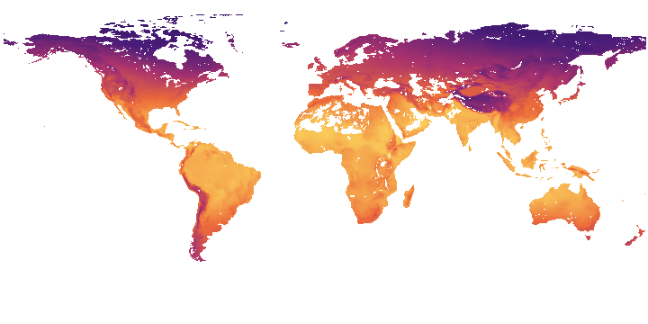
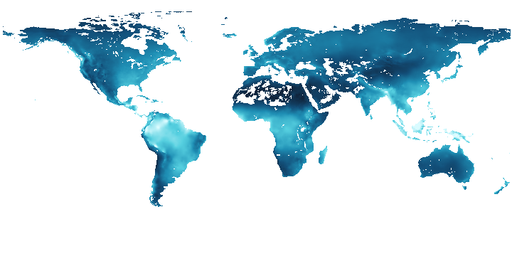
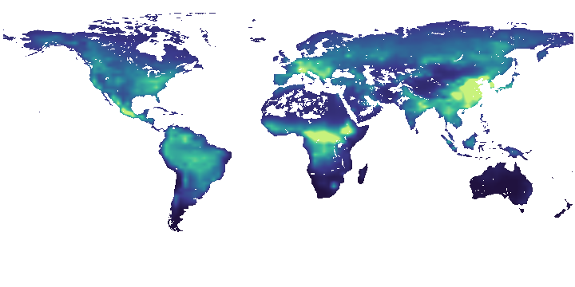
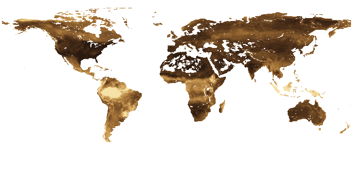
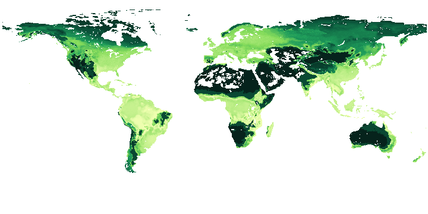
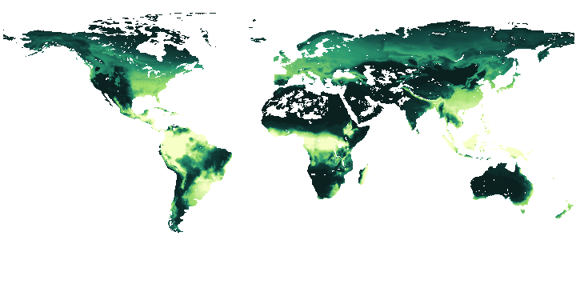
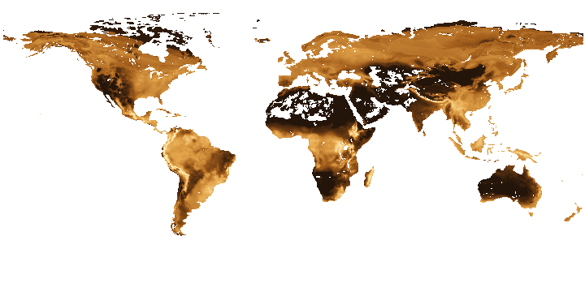
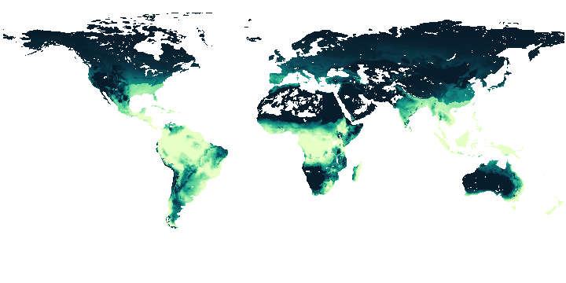
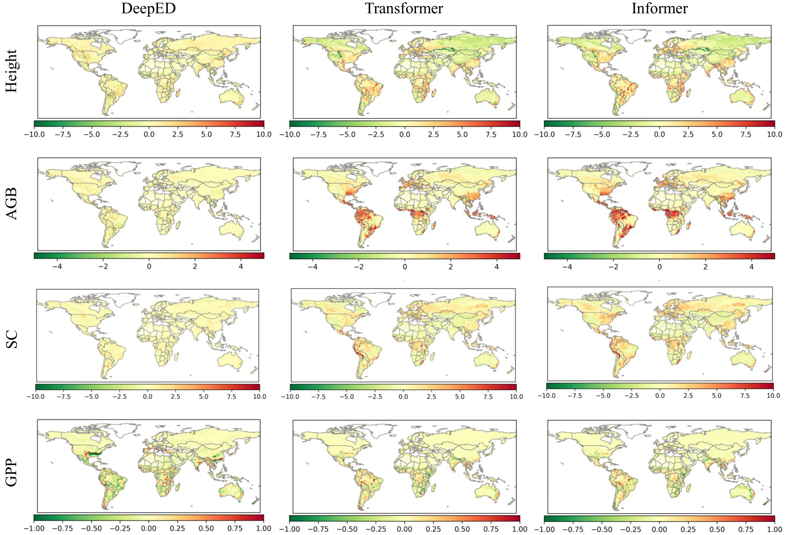
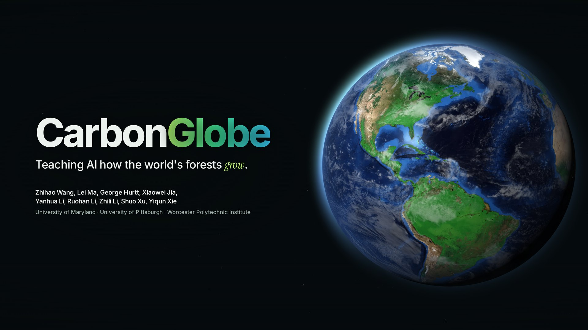

01 One forest
A forest, simulated year by year.
1981, central Amazon. The Ecosystem Demography model grows it from monthly climate, CO₂ and soil.
Teaching AI how the world's forests grow.
The first global, ML-ready dataset of process-based forest carbon simulations, with benchmarks for training AI emulators of the land.
University of Maryland · University of Pittsburgh · Worcester Polytechnic Institute
01 One forest
1981, central Amazon. The Ecosystem Demography model grows it from monthly climate, CO₂ and soil.
02 Forcings
A sapling in the wet Amazon, a 100-year-old stand through the 2015 drought, a young stand that burns, a boreal sapling.
03 Fifteen starting ages
From 1-year saplings to 500-year-old stands: forest structure that satellite lidar such as NASA's GEDI can measure.
04 The planet
Every 0.5° land cell, simulated for forty years: about 812 CPU-days of ED.
05 The emulator
Climate in, forest out, year after year. CarbonGlobe ships every step ML-ready.
06 What if?
Rolled out year after year, an emulator answers what-if questions that took ED 40 days.
07 CarbonGlobe in numbers
08 Available now
Open, ML-ready simulations of the world's forests. Free to download, ready to train.
zhwang0.github.io/carbon-globe-website
NeurIPS 2025 Datasets & Benchmarks·Hugging Face·Kaggle·GitHub·IEEE BigData Cup 2026
Why it matters
Forests take up carbon equal to almost half of our fossil-fuel emissions, and that sink is already shrinking.
⅓
of Earth's land is forest.
FAO · Forest Resources Assessment 20257.8GtC/yr
taken up by forests, 1990–2019.
Pan et al. · Nature 2024−36%
in the boreal forest sink over those three decades.
Pan et al. · Nature 2024ED, the model CarbonGlobe emulates, informs
Why CarbonGlobe
AI weather models took off on open, ML-ready data. CarbonGlobe brings the same to forest carbon.
The dataset
Inputs integrated, ED run and calibrated worldwide, outputs packaged for machine learning.
1Integrate 100+ inputs




136 drivers a month at 0.5°: weather, CO₂, soil and disturbance.
2Simulate with ED
About 812 CPU-days, for 15 starting ages at every site.
3Package 7 targets




Height, biomass, soil carbon, LAI, GPP, NPP and Rh.
From the paper and the dataset card.
Built for machine learning
No look-back window: errors compound, as they do when an emulator stands in for a simulator.
The task
X812,280 × 40 × 12 × 136sequences × years × months × driversv₀812,280 × 7initial forest stateY812,280 × 40 × 7annual targets to forecastScenario 1
Train on 1/16 of the sites and predict the rest, as an emulator would fill in a finer grid.
Scenario 2
Scores by Köppen–Geiger zone. Where does an emulator break?
Scenario 3
From fast-growing saplings to carbon-dense 500-year-old stands.
Problem-driven metrics
Next to RMSE and MAE: delta error for year-over-year change, and cumulative error for the drift by year 40.
Baselines
Recurrent, attention, linear and simulator-specific, scored the same way.
Get started
29.3 GB under CC BY 4.0, with splits, statistics and every baseline.
# from Kaggle
kaggle datasets download zhihaow/carbonglobe --unzip
# or from Hugging Face
hf download zhwang1/CarbonGlobe --repo-type dataset --local-dir CarbonGlobe
# what you get, 29.3 GB in all
# data_global/ glob_X_fea.npy (inputs), glob_Y001.npy … glob_Y500.npy (one per seed age)
# data_stats/ normalization statistics, the land mask, age statistics
# insitu_data/ in-situ GPP observations (ABoVE) for validation
# train.csv val.csv test.csv split indicesimport numpy as np
# memory-mapped: nothing loads until you index it
X = np.load("data_global/glob_X_fea.npy", mmap_mode="r") # (54152, 40, 12, 136)
Y = np.load("data_global/glob_Y001.npy", mmap_mode="r") # (54152, 41, 12, 7), age-1 start
# site i sits at the i-th land cell of the 0.5° mask
rows, cols = np.nonzero(np.load("data_stats/mask2d.npy"))
lat, lon = 89.75 - 0.5 * rows, -179.75 + 0.5 * cols
i = 43602 # central Amazon, 3.25°S 63.75°W
x, y = X[i], Y[i] # 40 years of climate; the forest, year 0 to 40
# an emulator learns ED's step (x[t], y[t]) -> y[t+1], then rolls outExplore
CarbonGlobe values on every 0.5° land cell. Pick a variable and a starting age, then click land for that site's trajectory.
Drag to rotate · scroll to zoom · click land
Variable
Starting forest age
Year 2021
—
ED reference simulations at 0.5°. Stocks show the December state; LAI and fluxes are annual means. Values are quantized for the browser; download the dataset for full precision.
Benchmarks
DeepED leads on slowly accumulating stocks, attention models on seasonal fluxes. Closing that gap is the open problem.
Lower is better · click a column to compare models
Overall evaluation with noise-perturbation training, Table 1 of the paper. Colors rank the eight models within each variable.
Speed
One 40-year global run: 40.6 days for ED on 20 CPU cores, about an hour for most emulators on one GPU.

IEEE BigData Cup 2026 · Challenge 05
Built on CarbonGlobe: train on today's climate, roll an emulator forty years into SSP1-2.6 and SSP5-8.5, and be scored on where the forest ends up. Awards are available.
Impact
Weather and climate already have fast AI models. CarbonGlobe trains the land carbon component that plugs in next to them.
The road so far
The first deep emulator of ED, for the U.S. Northeast. ACM SIGSPATIAL
The first global, ML-ready dataset and benchmark for forest carbon. NeurIPS
Forty-year forecasts under two future climates, open to everyone. IEEE BigData Cup
An action-conditioned world model, trained on CarbonGlobe, for what-if simulation. arXiv
CMIP6-driven runs to 2100, sub-annual and submodule outputs, and new learning tasks, as planned in the paper.
The film

1920 × 1080 · MP4 · with sound · rendered frame by frame from this page, with a score generated in code. Free to use in talks and posts. Download
Team
Built by the people who develop ED and the people who build emulators.
Supported in part by NSF, NASA, USGS, Google's AI for Social Good Impact Scholars program and the University of Pittsburgh, with computing from the University of Maryland's Zaratan cluster and NSF NCAR's Derecho. Questions: zhwang1@umd.edu and xie@umd.edu.
FAQ
A neural network trained to reproduce a simulator: the same inputs in, the same outputs out, orders of magnitude faster.
Its climate inputs are the same kind of gridded reanalysis (here NASA's MERRA-2). WeatherBench 2 asks a model to predict the atmosphere; CarbonGlobe asks what forests do with it. It is the land-carbon counterpart that can sit next to AI weather and climate models.
The inputs are observation-based products. The targets are simulations from ED, a process model calibrated and evaluated against lidar, flux towers, forest inventories and atmospheric inversions, whose results feed the Global Carbon Budget. An emulator trained on CarbonGlobe learns ED.
29.3 GB of float32 NumPy arrays. Memory-map them and stream batches, as in the quick start. The paper's timings for global inference come from a single RTX A4500 GPU.
The dataset spans 1981–2021, so ED could be calibrated against real observations. The IEEE BigData Cup 2026 challenge adds two future scenarios, SSP1-2.6 and SSP5-8.5, and CMIP6-driven runs to 2100 are planned.
Yes. Data and code are released under CC BY 4.0: use, share and adapt them with attribution. Please cite the NeurIPS 2025 paper.
Cite
If CarbonGlobe helps your research, please cite the NeurIPS 2025 paper.
@inproceedings{NEURIPS2025_0b82662b,
author = {Wang, Zhihao and Ma, Lei and Hurtt, George and Jia, Xiaowei and Li, Yanhua and Li, Ruohan and Li, Zhili and Xu, Shuo and Xie, Yiqun},
booktitle = {Advances in Neural Information Processing Systems},
doi = {10.52202/085713-0261},
editor = {D. Belgrave and C. Zhang and H. Lin and R. Pascanu and P. Koniusz and M. Ghassemi and N. Chen},
publisher = {Curran Associates, Inc.},
title = {CarbonGlobe: A Global-Scale, Multi-Decade Dataset and Benchmark for Carbon Forecasting in Forest Ecosystems},
url = {https://proceedings.neurips.cc/paper_files/paper/2025/file/0b82662b6c32e887bb252a74d8cb2d5e-Paper-Datasets_and_Benchmarks_Track.pdf},
volume = {38, Main Conference},
year = {2025}
}Forest ecosystems play a critical role in the Earth system as major carbon sinks that are essential for carbon neutralization and climate change mitigation. However, the Earth has undergone significant deforestation and forest degradation, and the remaining forested areas are also facing increasing pressures from socioeconomic factors and climate change, potentially pushing them towards tipping points. Responding to the grand challenge, a theory-based Ecosystem Demography (ED) model has been continuously developed over the past two decades and serves as a key component in major initiatives, including the Global Carbon Budget, NASA Carbon Monitoring System, and US Greenhouse Gas Center. Despite its growing importance in combating climate change and shaping carbon policies, ED's expensive computation significantly limits its ability to estimate carbon dynamics at the global scale with high spatial resolution. Recently, machine learning (ML) models have shown promising potential in approximating theory-based models with interesting success in various domains including weather forecasting, thanks to the open-source benchmark datasets made available. However, there are currently no publicly available ML-ready datasets for global carbon dynamics forecasting in forest ecosystems. The limited data availability hinders the development of corresponding ML emulators. Furthermore, the inputs needed for running ED are highly complex with over a hundred variables from various remote sensing products. To bridge the gap, we develop a new ML-ready benchmark dataset, CarbonGlobe, for carbon dynamics forecasting, featuring that: (1) the data has a global-scale coverage at 0.5° resolution; (2) the temporal range spans 40 years; (3) the inputs integrate extensive multi-source data from different sensing products, with calibrated outputs from ED; (4) the data is formatted in ML-ready forms and split into different evaluation scenarios based on climate conditions, etc.; (5) a set of problem-driven metrics is designed to develop benchmarks using various ML models to best align with the needs of downstream applications.